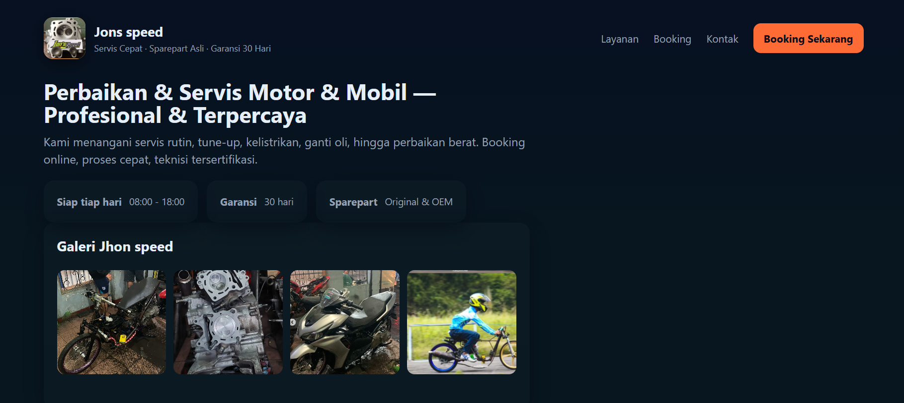

Web Informasi Bengkel
Situs bengkel motor & mobil untuk menampilkan layanan, galeri, kontak, dan fitur booking online dengan konfirmasi melalui WhatsApp.

Ringkasan Proyek
Halaman Utama
Backend & Penyimpanan
Alur Booking
Catatan Teknis Singkat
Skrip client di index.html mengakses elemen form/btn dan hanya bekerja jika halaman itu dimuat atau server Node dijalankan agar request POST berhasil.